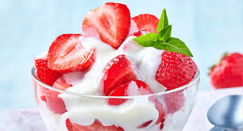

Mi receta favorita: Fresas con crema

Ingredientes:
- 1kl de fresa
- Lechera
- Crema
- Azucar o miel al gusto
- Bowl
Instrucciones:
- Picar las fresas en cuadros y depositarlas en un bowl
- Vertir la lechera y la crema a el bowl
- Agregar miel o azucar al gusto de ser necesario
Si quieren ver mas recetas dejo a continuacion el siguiente sitio web
Recetas a la orden